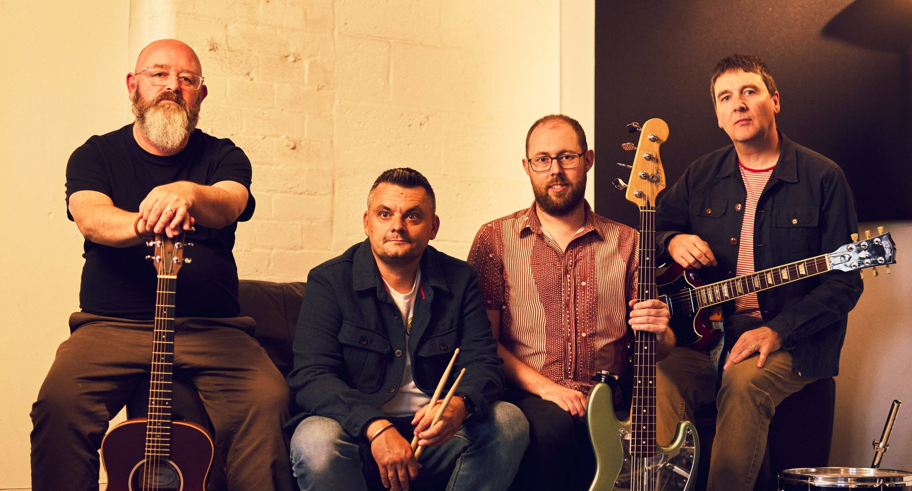

The Empty Page + The Cinderlarks
Sidney & Matilda, Sheffield
Doors 7:45pm · £7 adv / £10 OTD · 14+

Enigmatic melodies of loss and hope.
Come and see us play.
Sidney & Matilda, Sheffield
Doors 7:45pm · £7 adv / £10 OTD · 14+
more dates as they land —